home
onze organisaties
over ons
getuigenissen
Op zoek naar ondersteuning?
Wij geloven in expertise als hefboom en helpen je graag op weg
Visuele expertise
Auditieve expertise

Motorische expertise
Taal expertise
Niet-aaangeboren hersenletsels expertise
website gemaakt door
Menten Julien